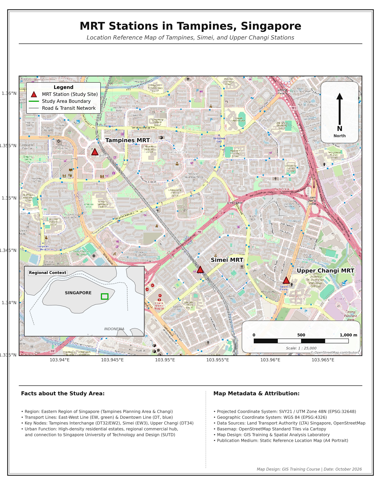
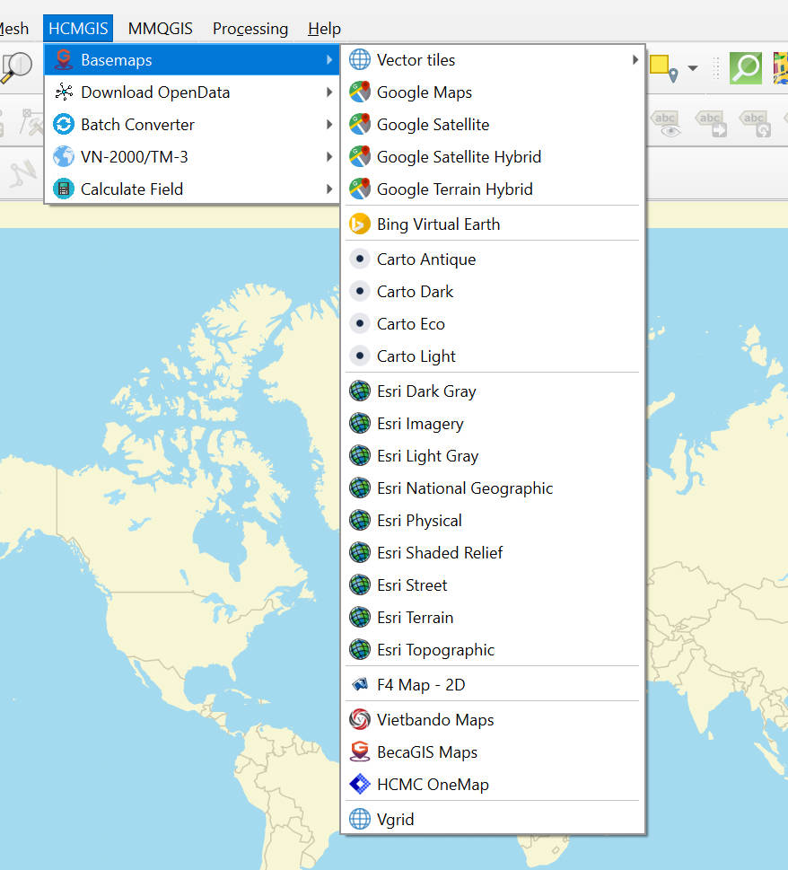
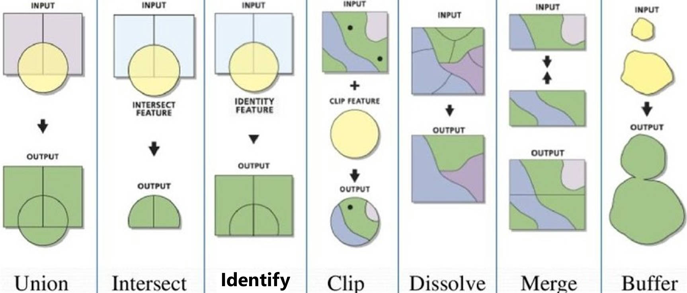

name: overview ## Assignment Overview **Individual assignment** · Part I of the Spatial Data Processing assignment (Parts I & II together: **20%** of the course grade) In Part I you turn open data into **one finished location map** (also called a reference map) of a **place of interest in Singapore**. You will: 1. choose a study area: a neighbourhood, town centre, campus, park, or a small group of sites 2. find open spatial datasets about it and prepare them so they line up correctly 3. **overlay** them on a basemap, with an inset map that shows where the place is 4. build the map in **QGIS or Python** (your choice) 5. explain and justify your choices in a short write-up --- ## Timeline **Part I due**: Friday of Week 7, 11:59pm; **Part II released** <div class="project-note">Late submissions lose 10% per day (see Course Policies). If something serious comes up, contact the instructor before the deadline.</div> --- name: task ## The Task Create **one static location map** of a place of interest in Singapore. Your map must: - focus on a **study area you choose**: a neighbourhood, town centre, campus, park, or a small group of sites - **overlay at least two datasets** from official sources on a basemap (for example, MRT stations, bus stops, hawker centres, parks, or planning-area boundaries) - include an **inset locator map** that shows where the study area sits within Singapore - be built in **QGIS** (Path A) or **Python** (Path B) Write one sentence that states the **purpose** of the map: what a reader should learn from it. For example: *"Where are the MRT stations and hawker centres around Queenstown?"* --- ## What a Location Map Looks Like .left_half[ <p></p> ] .right_half[ The tutorial example (not allowed as your submission) shows the parts: - a **main map** with the features of interest on top of a quiet basemap - **labels** for the key sites - an **inset locator map** with a box showing where the main map is - a **scale bar** and a **north arrow** - **latitude/longitude** labels on the edge - a **basemap credit** and a **title**, a **legend**, and a **source note**. ] --- ## Choosing Your Place and Layers A good location map shows **one place clearly**. .left_half[ ### Place and layers - **Extent**: an area you can show on one page at a readable scale, typically **1–10 km across**. A map of the whole island is not a location map; that is the job of the inset. - **Layers**: **2–4 layers** that relate to the purpose. More layers make the map harder to read. - **Roles**: decide which layers are *context* (boundaries, roads, water, the basemap) and which are the *features of interest*. The features of interest should be the strongest visual element. ] .right_half[ ### Symbols and labels - You are showing *what* and *where*, not *how much*. Use **different shapes and colours** for different feature types, not graduated colour ramps. - **Name the key sites** so the reader can find them on the ground. ### Plan ahead for Part II Point layers (e.g. hawker centres, bus stops) and planning-area or subzone boundaries work well, because in Part II you can count, join, and compare them. ] --- name: data ## Data Requirements Use **open data from official sources**. Good starting points: - [data.gov.sg](https://data.gov.sg): Master Plan 2019 boundaries, hawker centres, parks, park connectors, preschools, heritage sites - [LTA DataMall](https://datamall.lta.gov.sg): bus stops, MRT station exits, cycling paths, road network - [OneMap](https://www.onemap.gov.sg): geocoding, themes, and a Singapore basemap - [URA SPACE](https://www.ura.gov.sg/maps/): master plan land use See [Urban Data Sources and Open Data in Singapore](data.html) for more. For each dataset, record: **name, issuing agency, version or year, download date, and licence**. If you use a basemap (for example OpenStreetMap or OneMap), credit it on the map. All layers must be in the **same CRS** before you overlay them. **SVY21 (EPSG:3414)** is the standard projected CRS for Singapore and a good choice for the main map. --- ## Data Preparation Expectations Your data preparation must be transparent. In your write-up, state: - **Study area**: how you defined it (for example, a planning-area boundary, a bounding box, or the area around a set of sites) - **CRS**: the original CRS of each layer, and the CRS you reprojected it to - **Selection**: which features you kept and how (for example, an attribute filter such as `Name` in a list of stations, or a clip to the study area) - **Cleaning**: duplicates removed (for example, an interchange station listed once per MRT line), names fixed, records with missing locations - **Feature counts**: how many features of each layer appear on the map Check your overlay. If points appear in the sea, far from where they should be, or not at all, a layer is probably in the wrong CRS. --- name: workflow .right_half[ <figure> <p></p> </figure> ] ## Path A: QGIS 1. Load each layer and check its CRS in *Layer Properties → Information* 2. Set the project CRS to **EPSG:3414** in *Project → Properties → CRS*; use *Export → Save Features As* to save a reprojected copy 3. Add a basemap: in the *Browser* panel, *HCMGIS → Basemaps → OpenStreetMap or other basemaps* --- ## Path A: QGIS Keep the features of interest with *Select by Expression* (e.g. `"Name" IN ('Queenstown', 'Commonwealth')`), then *Export → Save Selected Features As*; or *Vector → Geoprocessing Tools → Clip or other tools appropriate*. Save the results in one **GeoPackage** <figure> <p></p> <figcaption>Union, Intersect, Identify, Clip, Dissolve, Merge, Buffer.</figcaption> <figsubcaption>Source: QGIS Geoprocessing Tools & Operators. https://www.youtube.com/watch?v=tznoUk7GwLs</figsubcaption> </figure> --- .right_half[ <figure> </figure> ] ## Path A: QGIS 5. Style each layer with *Symbology → Single Symbol* or *Categorized* 6. In the **Print Layout**, add the main map and a **second map item** for the inset; use its *Overviews* setting to draw the main map extent as a box 7. Add the legend, scale bar, north arrow, coordinate *Grid*, title, and source note; export as PNG (300 dpi) or PDF Keep a **step log**: a numbered list of every tool you ran and its key settings, with screenshots of the key dialogs. --- ## Path B: Python: read and select This example overlays two point layers on an OpenStreetMap basemap. Replace the file names, the selected names, and the extent with your own. The Week 5 tutorial notebook (`MRT_map_Tampines.ipynb`) explains each step in detail. You need to create your own notebook adapted from the tutorial notebook. --- name: deliverables .right_half[ A suggested structure: ```text SDP1_<StudentID>_<Name>/ ├── data ├── notebook.ipynb(Python) or steplog.pdf(QGIS) ├── map.png/jpg/pdf └── writeup.pdf ``` ] ## Deliverables Submit one `.zip` named `SDP1_<StudentID>_<Name>.zip` on **system** by **Friday of Week 7, 11:59pm**, containing: 1. **The map**: `map.png` (300 dpi) or `map.pdf` (A4 or A3) 2. **The write-up**: `writeup.pdf`, **500–700 words** (excluding tables and references) 3. **The workflow**: - Path A: the step log with screenshots - Path B: a notebook that runs top to bottom 4. **The data**: raw files, or download links and dates if a file is larger than 50 MB --- ## Write-up Structure 1. **Place and purpose**: which place the map shows, what the reader should learn, and why it matters (≈100 words) 2. **Data**: a table of datasets: name, agency, year, download date, licence 3. **Preparation**: study area, CRS and reprojection, selection, cleaning, feature counts 4. **Design choices**: extent and scale, basemap, symbols and colours, labels, inset extent and position. For each, say **why**, and what an alternative would have shown 5. **What the map shows**: describe where the features are in relation to each other and to the place. Name specific places 6. **Limitations**: what the map cannot tell the reader (e.g. data age, missing features, positional accuracy, basemap and data from different years) 7. **AI-use statement**: see the next slide --- ## Using AI Tools AI tools may help you write code, debug, or explain QGIS tools. They do not replace your judgement. In the write-up, state briefly: 1. which tool you used 2. what you used it for 3. what you checked yourself 4. any error it made that you had to fix Unchecked AI output that produces wrong numbers or a misleading map is your responsibility. "No AI tools were used" is also an acceptable statement. --- name: rubric ## Marking Rubric (100 marks) .project-table[ | Criterion | Marks | A strong submission | |---|---|---| | Place and data choice | 15 | Focused place and clear purpose; suitable official data, fully documented | | Data preparation and transparency | 20 | All layers in the same CRS and correctly aligned; selection and cleaning explained; feature counts stated | | Map composition and symbols | 25 | Suitable extent and scale; clear visual hierarchy; distinct, accessible symbols; quiet basemap | | Map elements and readability | 15 | Inset, legend, scale bar, north arrow, coordinates, labels, and source note all present and legible | | Interpretation and reflection | 15 | Specific description of the place; honest limitations; comparison with an alternative design | | Reproducibility | 10 | Workflow runs or can be followed on a clean machine, from raw data to the final map | ] --- ## Before You Submit - ☐ Does the title name the place and tell the reader what to look for? - ☐ Do all layers line up correctly (same CRS, no points in the sea)? - ☐ Are the features of interest the strongest visual element? - ☐ Does the inset show clearly where the main map is? - ☐ Does every layer have a readable legend entry? - ☐ Are the scale bar, north arrow, coordinates, and labels present? - ☐ Is every dataset and the basemap cited with agency, year, and download date? - ☐ Does the notebook run top to bottom, or can the step log be followed exactly? - ☐ Did you include the AI-use statement? <div class="project-note">A small, well-chosen place, a few relevant layers, and a clean, readable map will score better than a crowded map of the whole island.</div> --- <xL>Review the lecture: </xL><button onclick="window.location.href='week05_Cartography.html'">Go to Cartographic Design</button> <xL>Next part: </xL><button onclick="window.location.href='assignment_sdp2.html'">Go to Assignment (Part II)</button> <xL>Back to course menu: </xL><button onclick="window.location.href='index.html'">Go Back to Menu</button>